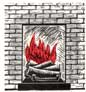
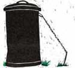
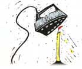
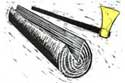

Cold Winds, Warm Fire
Jan Cunningham cleans smoke stains on her fireplace bricks with whitewall tire spray-on cleaner; Jere Koons turns an old tire into a log carrier; J.A. Gehrer uses a stake and chain to keep trash barrels from knocking over; Ronald Roman shares candle making advice; Marti Bradley finds that wood is easier to split in cold weather; George Tutterow tucks a ribbon on the mailbox door to signal if the box is full; Jean Schneider coats the bottom of his snow blower with no-stick kitchen spray; Nanette Blanchard uses a cider/water mixture to soothe sunburn, rinse hair and cleanser; Maureen Fuller let her baby son play in the bath safely inside a laundry basket; Dean Olsen, April Anderson and John Carlin share cures for clogged sinks; Ruben Pauly used a pop can pull tab as a picture hanger; Terry Fenwick places a fabric softener sheet under the car seat for a fresh scent; Dennis Ouellette uses a potato to remove the broken socket of a light bulb.
By the Mother Earth News editors
January/February 1988
COUNTRY LORE
We can't ignore the curse of winter chores.
I love sitting in front of a fireplace and was delighted that the house we'd just bought had one. Not so delightful, though, were the dark smoke stains on the brick and stone surrounding the opening. We found, however, that the stains could be removed with a spray-on cleaner for whitewall tires. Scrubbing with a brush got the cleaner into crevices. When used on the glass doors of our fireplace, the same product dissolves creosote and smoke deposits like magic. I just spray it on, wipe it off with newspaper and polish off the remaining streaks with window cleaner.
- Jan Cunningham
Crossville, Tennessee
Tire Tote
I made a handy log carrier out of an old car tire. Using a utility knife, I cut away all but about 18 inches of the tread and the side walls, leaving an inch and a half or so of rubber around each rim. This gave me two full circles as handles, joined at the bottom with enough tire to support four or five splits at a time. An even better carrier can be made by using a 1" X 8" X 24" board as the bottom of the tote and cutting the rubber off in a straight line under each handle. Then screw each straight edge onto one long edge of the board. The board is longer, of course, than the diameter of the handles, so be sure to center it so your load will be balanced.
- Jere A. Koons
Newmanstown, Pennsylvania
Unturned at the Stake
I attach our garbage can to a stake with a short piece of chain and a snap hook like those used on dog leashes. This keeps the can from blowing away or being turned over by animals, but still allows me to remove it easily for cleaning.
- J.A. Gehrer
Milton, Pennsylvania
Tips on Drips
Here's some advice from a candlemaker. Before lighting a used candle, retaper the burnt-down end with a knife. Extinguish a candle by dipping the wick into the melted wax in the well (be sure to straighten it again). Both these tricks will help prevent dripping wax, but if some should get on your tablecloth, place a paper towel over the spot and use a warm iron to draw the wax up into the towel. Any candle dye that remains can usually be removed by soaking that part of the cloth in acetone.
- Ronald Roman
Lysekloster, Norway
The Alaska Advantage
As a single mother of two, I've had to learn how to get hard jobs done as efficiently as possible. Take firewood, for example. Did you know that the colder it gets, the easier wood is to split? When I'm tired and that maul feels almost too heavy to lift, I wait till the temperature drops to around 20 below; the wood practically falls apart on its own.
- Marti Bradley
Fairbanks, Alaska
A Snazzy Signal
My mailbox is a good ways from the house and across a busy highway. It was annoying to walk that distance (especially in winter), dodge the traffic and then find the box empty. I always wondered if I just didn't have any mail that day or if it hadn't yet been delivered and I'd have to make another trip. I decided I needed a signal I could see from the house. I tied an 18-inch-long piece of bright ribbon to the top of the mailbox door, tucked the ribbon inside and closed the door. When the mail is delivered, the ribbon tumbles out as the door is opened; when I pick up the mail I just flip the ribbon back inside till the next delivery.
- George F. Tutterrow
Crossville, Tennessee
Twice as Good
I read with interest D. Gallagher's hint in issue 106 about coating the bottom of a power lawn mower with no-stick cooking spray. I use the same product on my snow blower when the snow is wet and sticky. Spraying the auger and the throat of the blower prevents clogging and helps the snow flow freely through.
- Jean Schneider
West St. Paul, Minnesota
Versatile Vinegar
One of my favorite time- and money-saving tricks is to fill a plastic squirt bottle (the kind with a flip-top cap that shampoo and ketchup come in) with a mix of one part apple cider vinegar to four parts water. I keep this in the bathroom and use it a) as a rinse after shampooing to make my hair squeaky clean and restore its pH balance; b) to soothe a sunburn - I just splash the solution on or add it to my bath water; c) as a cleanser to make the bathroom mirror and windows sparkle; and d) mixed into a paste with baking soda to scrub the tub.
- Nanette J. Blanchard
Bayfield, Colorado
Rub-a-Dub-Dub
When my children were quite young, my little girl begged to take baths with her baby brother, who was just able to sit by himself. I kept all three of us happy by setting him in the bathtub inside a plastic laundry basket. I didn't worry, because he was safe; she had fun with her brother; and he enjoyed playing with the water as it flowed in and out of the woven sides of the basket.
- Maureen Fuller
Trumansburg, New York
Three Cures for Clogs
Our kitchen sink has clogged more times than I care to remember, and the cause is usually an accidental grease spill. I got awfully tired of removing and cleaning the drain trap every time this happened, so I tried something easier - and it worked. I hold a pan of very hot tap water under the trap, submerging that section of the pipe. In a few moments the grease melts enough to be washed away, and I don't even have to clear the sink.
- Dean Olsen
San Pedro, California
Though I threatened my husband with exile if he ever again poured grease down our kitchen drain, it still ran slowly and sometimes not at all. I had to find another solution. I now follow a weekly procedure that keeps the drain free of clogs and of odors, too. I pour a cup of baking soda down the drain and follow that with a cup of vinegar. Once the mixture stops foaming, I pour in a pint of boiling water. This method works so well in the kitchen drain that I've gone on to use it in my other sinks and in the bathtub as well.
- April L. Anderson
Summitville, Indiana
My shop vac, which handles bot wet and dry materials, is a lifesaver when the sink fills up and the drain won't function. The machine not only vacuums out the dirty, greasy standing water, but also sucks the pipes clean. When I think of how messy and time-consuming this chore used to be (or how expensive it is to hire a plumber to do it), I feel the cost of the shop vac is justified by this job alone.
- John Carlin
Austin, Minnesota
Hang It All
My daughter and I wanted to hang a framed picture, but there was no hanging hardware on the back. So we improvised with the pull tab from a soda pop can. We fastened the squared end of the tab to the picture's cardboard backing with a pop rivet, after first drilling a small hole in the metal tab. The round end of the tab with the hole (the part you pull) slips easily over a nail or other hanger in the wall. I realize that not all pull tabs are made the same, but this idea would work with just about any type.
- Ruben Pauly
Alliance, Nebraska
S cents for cents
To freshen the air in your car, place a sheet of fabric softener under the seat. If the softener odor's too strong, put the sheet in a plastic bag and expose just a little. For a musty basement, soak a paper towel in pine cleaner and place it in a closed film canister. Punch a hole in the lid; the bigger the hole, the stronger the scent. And for your gym bag or locker (whew!), just keep a big bar of unwrapped deodorant soap in each.
- Terry Fenwick
Bellwood, Illinois
Spuds Out
Did you ever try to unscrew a light bulb only to have the glass break while the socket remained stuck? Just cut off the end of a potato, press it against the jagged glass, and twist out the socket. Be sure, though, to turn the power off first - you might end up with a baked potato!
- Dennis Ouellette
West Hill, Ontario
Through the years we've all discovered a few practical, time-tested solutions to the frustrating little problems of everyday life. Send your own suggestions to Country Lore, Mother Earth News, P. O. Box 70, Hendersonville, NC 28793. A one year subscription - or extension of an existing subscription - will be sent to each contributor whose tip is printed here in this column.
|
 |
 |
 |
|
 |
 |
|